第35天：生成目标文件(中)
第35天：生成目标文件(中)
接上一篇文章。
字符串表
符号有名字，段也有名字，而且它们的名字长度不定，如何存储呢？前面已经提过，就是把它们的名字挨个排列，弄成一个表（其实就是一个大数组）；
假设一个符号的 st_name 字段是 8，那就从这个数组的第 8 个元素开始，一直读，直到遇到 \0；读出来的字符串就是这个符号的名字。
我们举个例子。
段表举例图第 5 个条目是字符串表的表项
[ 5] .strtab STRTAB 00000000 00a4d0 00016c 00 0 0 1
文件偏移为 00a4d0
hexdump -C -s 0x00a4d0 test_nasm.o
只列举结果的一部分
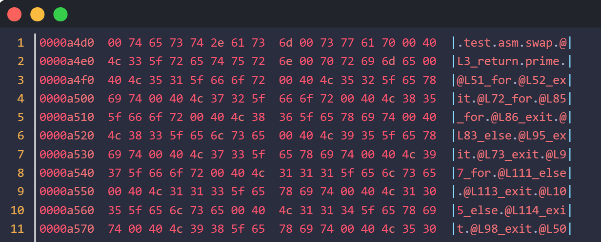
在 ELF 规范中，字符串表（.strtab 或 .shstrtab）的第一个字节（索引为 0）必须是空字符（\0）。
如果一个符号或一个节（Section）没有名字，它的 st_name 或 sh_name 字段会被设为 0。
所以，0xa4d0 位置是 0，然后是 74 65 73 74 2e 61 73 6d；
对应 “text.asm”
再然后，是 0，表示结束，这个 0 是非常必要的，作用类似于C语言中字符串结尾的 0，表示字符串结束。
字符串表最重要的用途是为符号表服务，符号表表项第一个字段就是 st_name，占 4 个字节，表示符号名字的索引。
下面举例说明
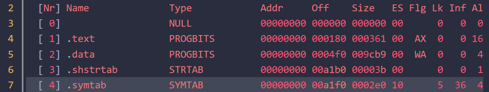
[4] 这是符号表的段表项。
我们查看一下符号表的原始数据
hexdump -C -s 0x00a1f0 test_nasm.o
符号表的表项大小是 sizeof(Elf32_Sym) = 16 字节；上面的 “ES” 字段（0x10）也说明了这一点。
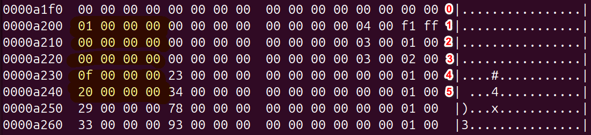
上图就是符号表数据的一部分。
我在右侧标注了 0~5，分别对应第 0~5 个条目。
条目 0 全是 0，这是一个空的符号表项。
条目 1，前四个字节是 1，指明了此符号名字的索引，对应 “text.asm”;
st_info 是倒数第 4 个字节，值是 4，低 4 位表示符号类型，高 4 位表示绑定信息;
elf.h 中有
1 | |
说明 text.asm 是一个文件
我们再看条目 4，前四个字节是 0xf，也就是 15，从字符串表里面查，是 @L3_return;
再看条目 5，前四个字节是 0x20,从符号表里面查，是 @L51_for;
下面我们看条目 2 和 3，发现前四个字节都是 0，也就是偏移为 0，表示空字符。这就有点奇怪了，空符号表项的名字是空，这不稀奇，怎么条目 2 和 3 也没有名字？
我们看看条目 2 和 3 的 st_info ，倒数第 4 个字节的低 4 位是 3;
1 | |
STT_SECTION（值为 3）表示该符号代表一个节（section）本身，而不是函数、变量等用户定义的实体。
这类符号的主要作用是：
为节提供一个可被重定位引用的“标签”，以便其他重定位条目（relocation entries）可以引用该节的地址。
节符号由链接器内部使用，不在源代码中出现。它们没有名字（即 st_name = 0），其节索引（st_shndx）标识其所代表的节。
另外，字符串表（.strtab）中不需要为每个段存储冗余的名字，因为段表字符串表中有每个段的名字。
所以，代表节的符号是不需要名字的。
前面说了，对于符号表，sh_link 指向与之关联的字符串表 (STRTAB) 的索引。这个关联就是说符号表表项中的符号名是由 st_name 指示，st_name 仅仅是偏移，相对于什么的偏移呢，那就看 sh_link 的值，它指向段表的某个条目，前文的例子是 5，索引是 5 的段表项是字符串表 “.strtab”，所以， st_name 就是相对于这个字符串表起始位置的偏移。
现在我们可以看构造符号表的代码了
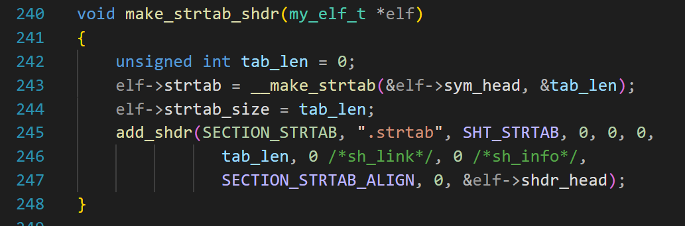
第 243 行，构造符号表的内容，就是分配一片内存，把用到的符号名字拼在一起，起始地址赋值给 strtab, tab_len 是一个输出型参数，表示分配的内存的大小;
第 244 行，填写字符串的总长度;
第 245 行，添加字符串表项;
第 243 行， __make_strtab 的代码如下：
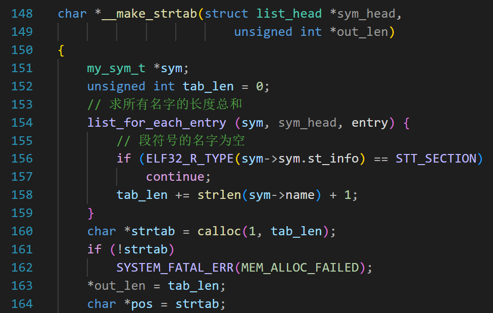
第 154 行，遍历符号表，如果发现类型是表示段的符号，则 continue,因为前面说了，这种符号的名字是空;
第 158 行，求每个符号名字的长度，再加 1，这是因为名字后面还有一个 0，再累加到 tab_len 上;
第 160 行，分配 tab_len 字节的内存;
第 163 行，填写输出型参数，out_len;
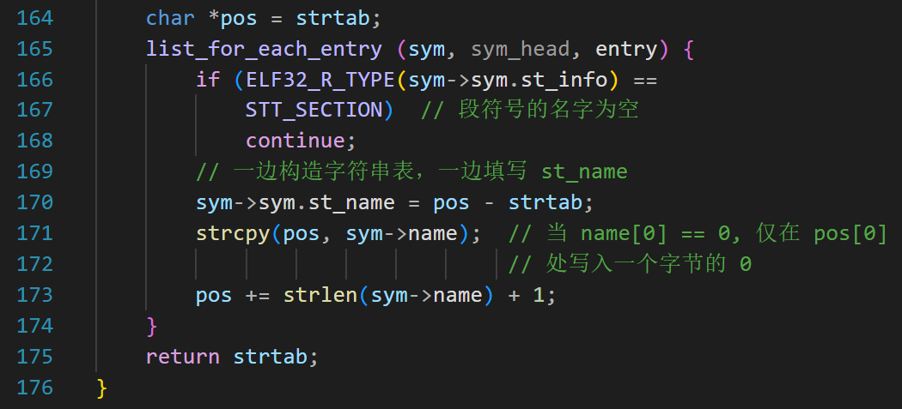
第 164 行，让指针 pos 指向所分配内存的开始。
第 165 行，再次遍历符号表，跳过 STT_SECTION 类型的符号。
第 170 行，第一次执行的时候， pos - strtab 是 0，所以 st_name 就是 0，这个刚好是空符号的名字。
第 171 行，复制当前符号的名字到 pos 指向的内存，因为空符号的 sym->name[0] 是 0，所以 strcpy 要做的就是把 0 拷贝到 strtab[0];
第 173 行，更新 pos 的位置;
再次执行到第 170 行， pos - strtab 表示 strtab 数组已经有的字符串长度，也就是符号名字在 strtab 数组中的偏移;
第 171 行，把符号的名字追加到已有字符串的后面;
段表字符串表
我们趁热打铁，看看段表字符串表的构造。
段表字符串表，顾名思义，就是把段表中所有段的名字收集起来，构成一个字符数组；
符号表中符号的名字靠查字符串表，段表中段的名字靠查段表字符串表。
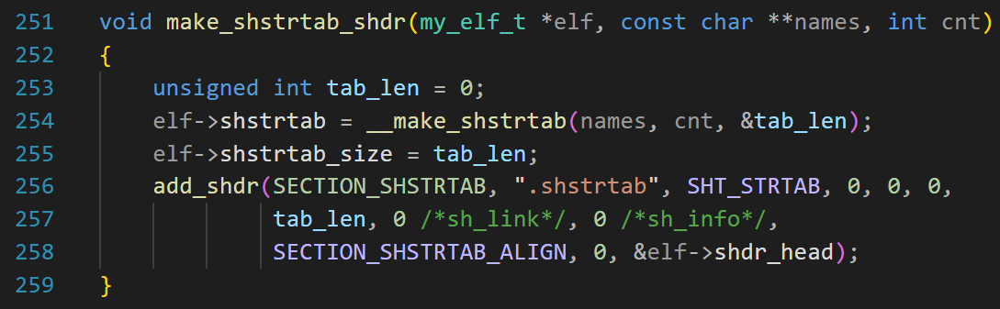
第 1 个参数，应该传入全局变量 my_elf_g 的地址。
有读者纳闷，都是全局变量了，还传参数干什么？想用就直接用啊。道理没有错，但是这个函数在后面的链接器中也要用到，那时候就是别的 elf 了，所以专门设计成参数。
第 2 个参数是指向 const char * 的指针，因为 names 对应的实际参数是一个数组，它的元素是 const char * 类型，数组名作为参数会自动转换成指向第一个元素的指针，所以是 const char ** 类型。
第 3 个参数是数组的长度。
数组的名字和长度都传给了第 254 行的 __make_shstrtab 函数，
__make_shstrtab 函数还有一个输出型参数，表示分配了多少字节的空间。
我在文件作用域定义了数组
1 | |
这些字符串来自各个段的段名。
有读者说为什么没有 .text 和 .data 呢？
这是因为有 “.rel.text” 和 “.rel.data”了，这里面就有 “.text ” 和 “.data”;
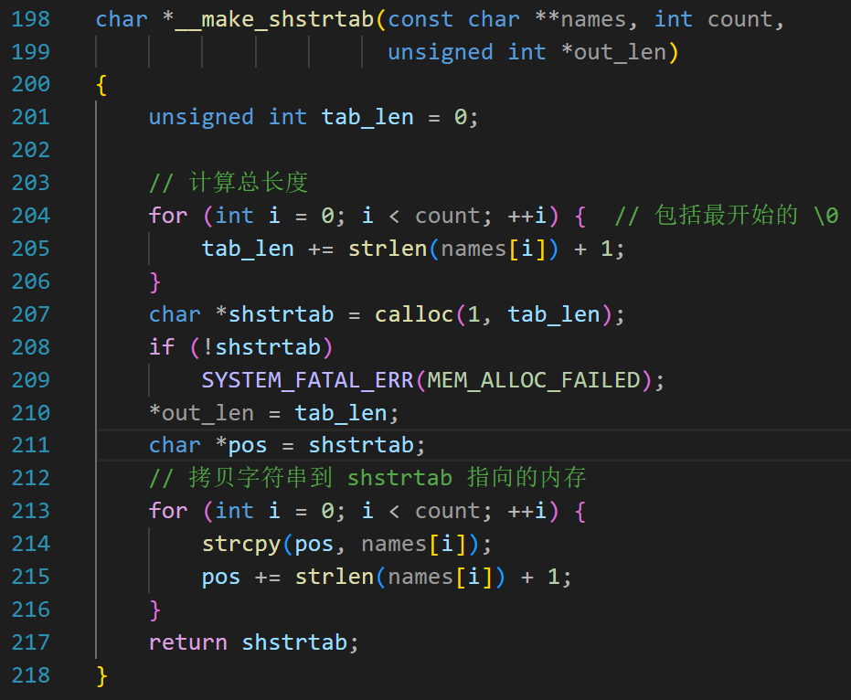
204~206，计算数组中所有的字符串长度，注意要 + 1，表示字符串结尾的 \0。
第 207 行分配内存，第210 行填写长度。
第 213~216，把数组里面的字符串拷贝到分配的内存里。
和前面的字符串表不一样，这里面只有拷贝字符串，没有给段表项的 sh_name 赋值。给 sh_name 赋值是在另一个函数。
重定位表
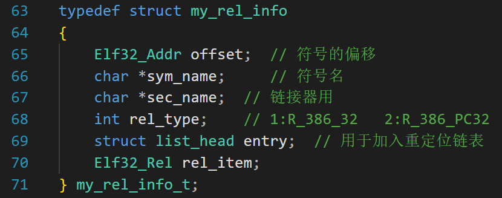
在原有结构体 Elf32_Rel 的基础上，我增加了偏移、符号名、类型这几个字段。
第 70 行的 Elf32_Rel，其定义在 elf.h 中，我们用的是不带加数的形式。
1 | |
r_info 的低 8 位表示重定位的类型；高 24 位表示要重定位的符号的索引；
有人会问，你这个 my_rel_info_t 里面的 offset 、rel_type 这 2 个字段和 Elf32_Rel 中的重复了。
是的，确实重复了。我打算先把信息收集到 my_rel_info_t 中的 offset、sym_name、rel_type 字段，等到了构造重定位表项的时候，再把信息拷贝或组合到 Elf32_Rel 中；
之前在生成指令编码的时候，我们花了很多力气讨论重定位，已经生成了重定位的所有信息。
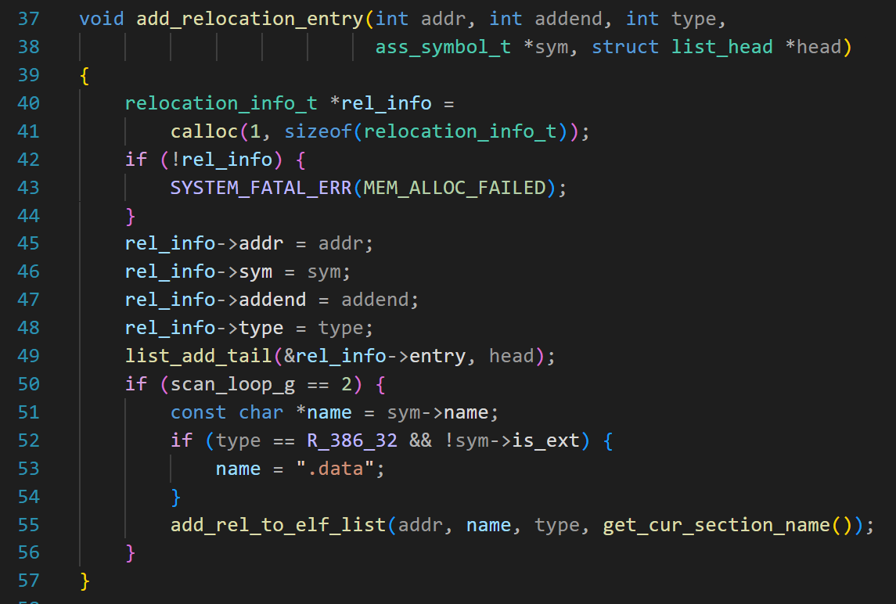
从第 37 到 49 是原来的代码。
现在加上了 50 行及后面的代码。
第 52 行，如果是绝对重定位且是内部的符号，则用 “.data” 作为符号名字，原因之前讲过了。
第 55 行，add_rel_to_elf_list 的代码是
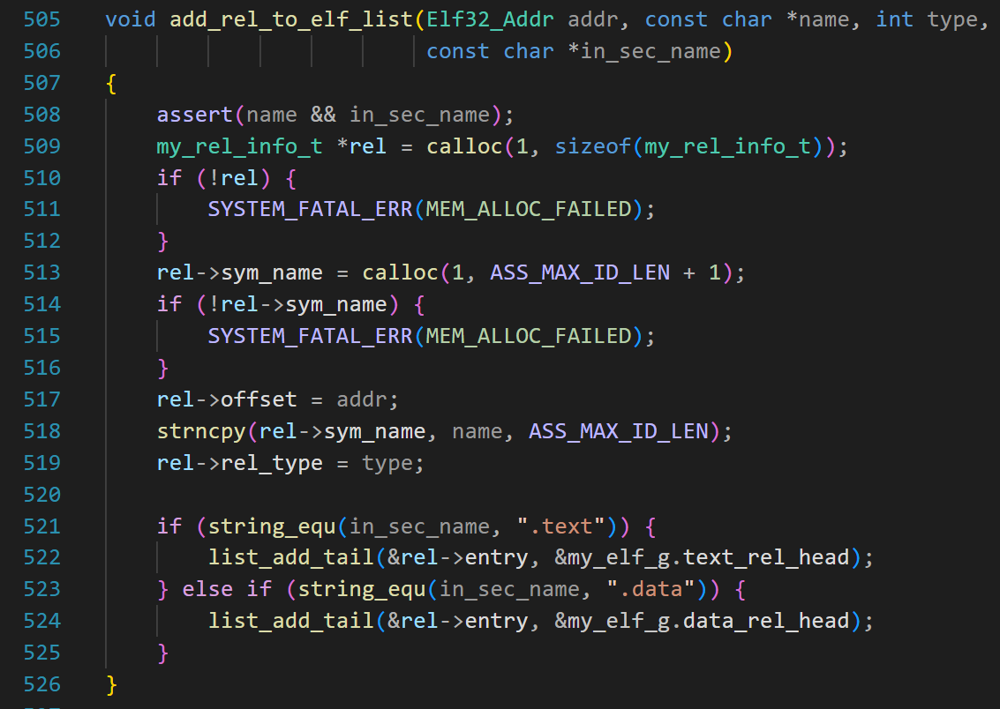
第 509 到 516 分配内存；
第 517 到 519 填写 my_rel_info_t 中的 offset、sym_name、rel_type 字段；
第 521 到 525，根据重定位作用的段（就是要打补丁的段）加入到不同的链表。
当汇编器完成了第二次扫描后，重定位信息就收集完毕了，全部信息都在链表上。
前文已经展示了 make_elf 函数,此函数会调用
make_rel_shdr(SECTION_REL_TEXT);
make_rel_shdr(SECTION_REL_DATA);
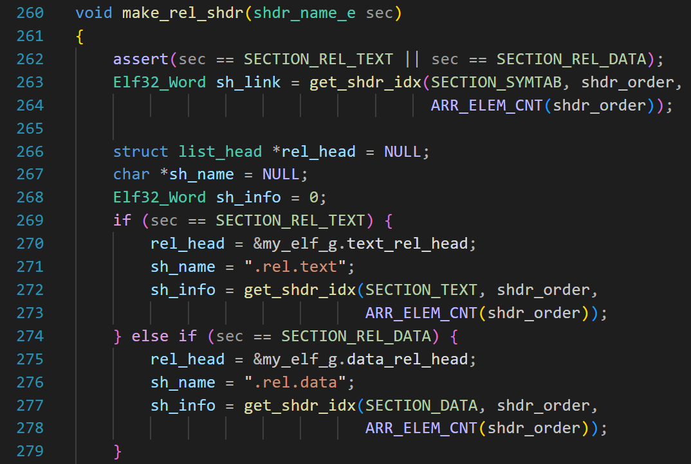
make_rel_shdr() 函数用来构造重定位表的表项，根据参数来判断是代码段的重定位表项还是数据段的重定位表项。
第 263 行，对于重定位表表项，sh_link 指向关联的符号表索引。
第 269 ，如果是代码段的重定位，则让 rel_head 等于 &my_elf_g.text_rel_head; 这是要加入的链表的头节点。
第 271 行设置段的名字。
第 272 行填写 sh_info, 对于重定位表，sh_info 指向被修补的节的索引。
第 274 行，如果是数据段的重定位，相似的操作，不再赘述。
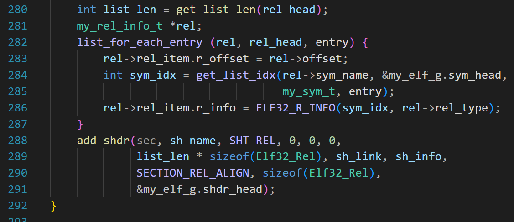
第 280 行，获得链表上节点的数目。
第 282 行，遍历链表，取出 offset，赋值给 Elf32_Rel 的 r_offset;
第 284 行，根据符号的名字，得到它在符号表中的索引我们举个例子;
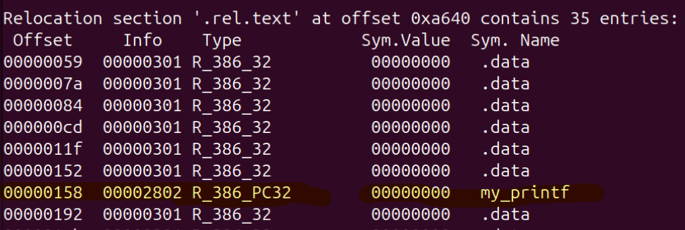
这是 text 段的重定位表。
看黄色的条目，Offset 是 0x158，表示要修正的地址在 .text 段 0x158 处；
info 低 8 位标识重定位的类型；也就是 2， 表示相对重定位；
高 24 位表示要重定位的符号在符号表中的索引，是 0x28，十进制是 40；
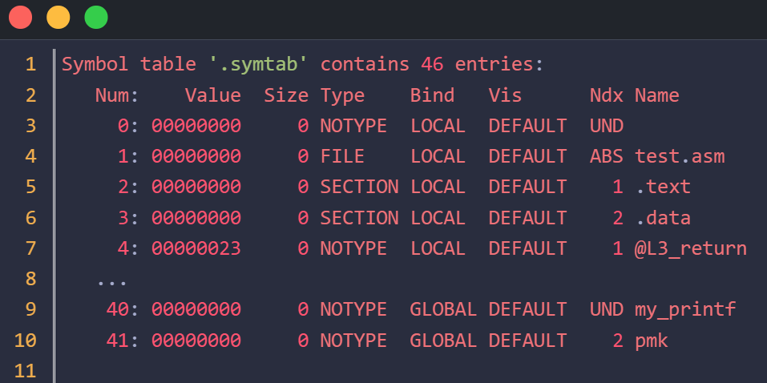
可以看到，符号表第 40 个条目，就是符号 my_printf;
以上，重定位表项也构造完成。
make_elf() 函数还有 2 项非常重要的工作；
fill_shdr_offset 和 fill_shdr_name；
一个用来确定每个段的偏移，一个用来填写段表项的 sh_name；
先看 fill_shdr_offset 函数
1 | |
模仿 nasm，我们把段表放在整个文件偏移 64 字节的地方。
也就是说前 52 字节是文件头，然后补 12 个字节的 0，再放段表；
第 6 行，e_shoff 是 64；
第 7 行，e_shnum 是段表项的个数；
第 9 行， e_shentsize 表示段表每个条目的大小；
第 10 行，求 shdrtab_size，就是段表的总大小；
想象文件头、段表和每个段都是一块拼图，我们要做的就是把它们按顺序拼接起来，还要考虑到对齐。
假设文件开始的位置是 0，先放文件头，占用 52 字节，再填充 12 字节，然后放段表；
64 加上段表总大小，就是当前的位置，代码第 12 行，cur_addr 表示当前的位置；
第 17 行，遍历链表 &my_elf_g.shdr_head，拿出每个段表表项，如果是空的就跳过，因为空表项的 size 是 0；
第 20 行，取出表项 shdr 的 sh_addralign 字段，按照要求对齐；
align_size(cur_addr, align); 意思是把 cur_addr 对齐到 align 字节，例如当前是 181，如果是 4 字节对齐，那么对齐后就是 184；
对齐后，就可以放置 shdr 代表的段了。
此时可以确定这个段的偏移，填写 shdr->sh.sh_offset，值就是 align_size(cur_addr, align);
放置后，cur_addr 会更新，也就是加上这个段的长度。
现在，我们填写每个段表项的 sh_name 字段。
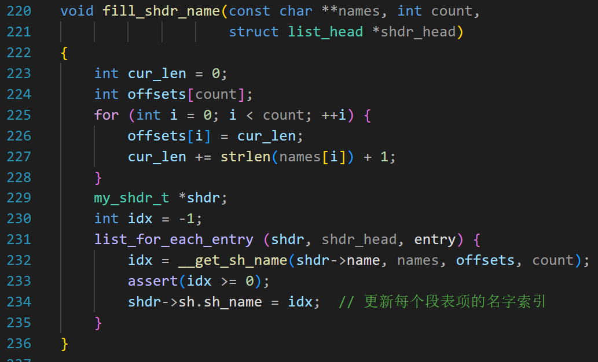
sh_name 表示段的名字在 .shstrtab 中的偏移。
第 224 行，定义了一个数组;
第 225~228，填充这个数组，逻辑是这样的：
刚开始， cur_len 是 0；
举个例子，字符串数组是
1 | |
我们已经调用 __make_shstrtab 函数把这些字符串拼在一起了。
请问数组中每个字符串在 .shstrtab 中的偏移是多少？
任何一个字符串的偏移，都等于它之前的所有字符串的总长度，所以有代码 225 ~ 228；
offsets[i] 对应第 i 个字符串在 .shstrtab 中的偏移；
第 231 行，遍历所有段表项，调用 __get_sh_name 函数；
此函数第一个参数是是段名，例如 “.symtab”，“.rel.data” 等；
第二个参数是数组名，需要传入 shstrtab_names；
第三个参数是刚才填写好的 offsets 数组，第 4 个参数是 offsets 数组的长度，因为 shstrtab_names 数组和 offsets 数组的长度是一样的，所以用“一个”参数来表示长度就够了。
__get_sh_name 函数代码如下：
1 | |
此函数的作用是计算 target_name 指向的字符串在 shstrtab 中的偏移。
因为偏移已经计算好了，就在 offsets 数组中。
但是第 6 ~7 行为什么不是 return offsets[i] 呢？
这是因为段名 “.text ” 和 “.data”，是 “.rel.text” 和 “.rel.data” 的子串，
“.text ” 的偏移，等于 “.rel.text” 的偏移加上 “.text ” 在 ".rel.text"中的偏移。
“.rel.text” 的偏移就在 offsets[4] 中， “.text ” 在 ".rel.text"中的偏移怎么求呢？
可以用 strstr 函数。它是C标准库函数，定义在 <string.h> 头文件中。
函数原型是 char *strstr(const char *haystack, const char *needle);
haystack 是“干草堆”的意思，needle 是“针”的意思，可以理解为大海捞针。
haystack：要在哪个字符串（“干草堆”）里面搜寻。
needle：要查找的子字符串（“针”）。
返回值：
如果找到 needle，返回 needle 第一次出现的起始地址;
如果没找到，返回 NULL；
特别地，如果 needle 是空字符串，则返回 haystack 字符串的地址（这是标准规定）。
举个例子，haystack 是 “hello,world!” ；needle 是 “world”;
假设内存如下图：
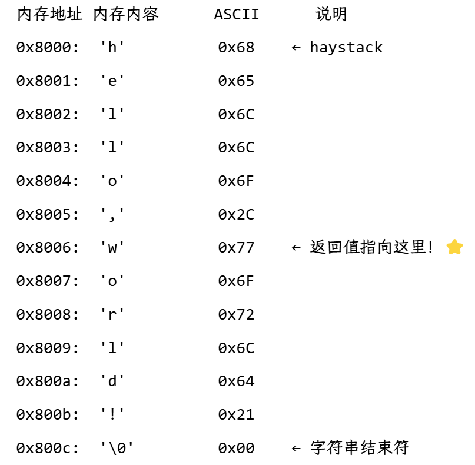
那么函数的返回值是 0x8006;
world 在 “hello,world!” 中的偏移等于 0x8006-0x8000 = 6;
代码第 7 行， find_pos - names[i] 就是求这个偏移量。
特别地，当 i = 0 的时候，要查找的子字符串是空串， 所以会返回 names[0] 代表的字符串的地址;
第 7 行实际是 names[0] - names[0] + offsets[0];
结果就是 0，没有问题。
文件头
1 | |
现在该填写文件头了。
第 19 行，填写段表字符串表的索引。之所以在文件头中包含这个信息，是因为在分析段表项的时候，不仅仅需要段的偏移、大小等，还需要段的名字。不然的话不知道这是什么段。
为了得到段的名字，需要先找到段表字符串表，那就需要找到它对应的表项，如何找到段表字符串表对应的表项呢？需要段的名字。这不是死循环了吗？
所以，先获得段表字符串表的索引，再去段表项里面拿段表字符串表的偏移，这样就得到了“花名册”。解析段表项的时候，根据段的 sh_name 字段，在花名册里面一查，就知道这是哪个段。
其他字段之前已经介绍过，不赘述。
到了这里，make_elf 函数就都讲完了。